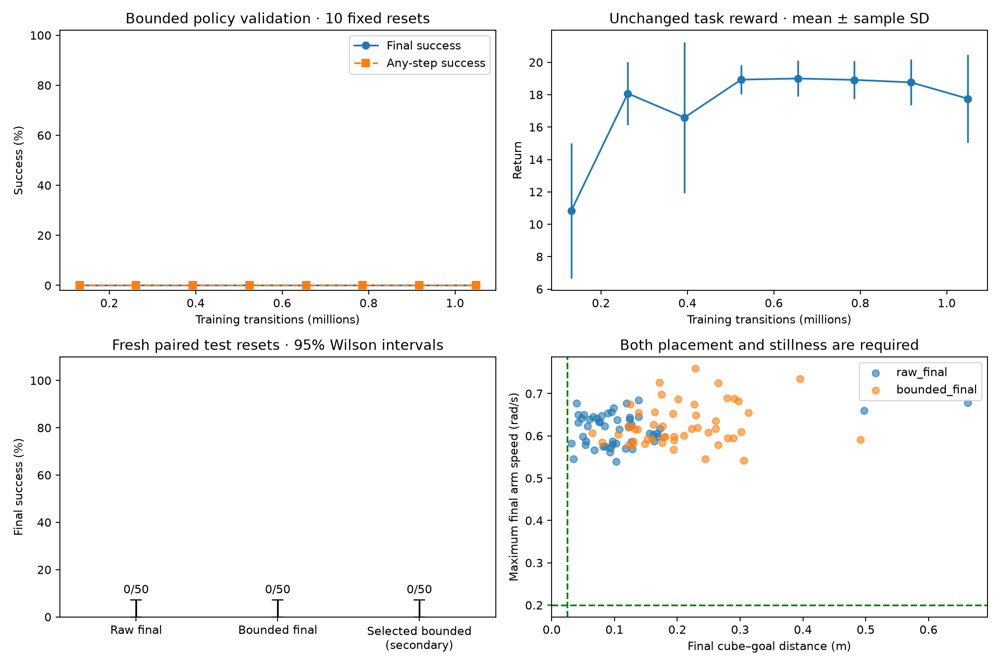
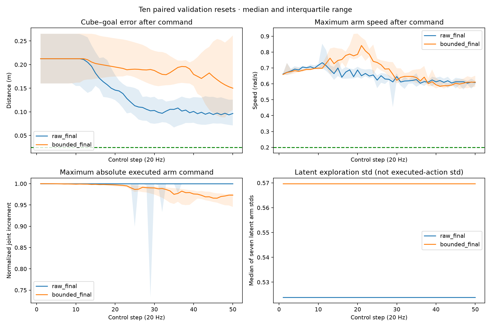

Stage 1 · one-change action-distribution ablation
Can a bounded PPO policy learn to place and stop?
Primary fixed-budget comparison: original raw-state Gaussian PPO versus a tanh-transformed Gaussian trained from scratch. Each uses 1,048,576 transitions, seed42 and four workers. Actor/critic initial tensors match exactly. Reward, controller, observation, horizon and all PPO settings are unchanged. The bounded distribution includes the change-of-variables log probability; this is not post-hoc action clipping or a privileged stopping override.
Official success requires 3D goal error ≤2.5cm and all seven arm speeds ≤0.2rad/s. Evaluation runs all50steps, even after first success. Tanh can still approach the action boundary; bounded output is not proof of good control.

Synchronized validation commands
Ten paired validation resets show the median and interquartile range of commands and their resulting states. The exploration standard deviation is measured in latent Gaussian coordinates, before tanh.

Native rollouts
First two predeclared test seeds, without success-based selection. Each video reproduces every stored non-trajectory outcome field.
Predeclared test seed 110000
raw_finalbounded_finalPredeclared test seed 110001
raw_finalbounded_final
Protocol and limits
Validation100000–100009; fresh paired tests110000–110049. Checkpoint selection now favors final success, then any-step success, then return. Validation callbacks run before the corresponding optimizer update; fixed-budget final checkpoints are saved after the last update. Selected-policy results are secondary because the original raw run used a different validation split. One training seed cannot establish algorithm-level improvement. The original raw run occurred earlier; training runtime is descriptive. The predeclared replication trigger is at least5/50 bounded final successes and improvement over the paired raw control.
Full evidence: config.json · training.json · validation.json · selected.json · comparison.json · provenance.json · loaded_recipe_contracts.json · test_raw_final.json · test_bounded_final.json · test_bounded_selected_secondary.json · video_raw_final.json · video_bounded_final.json · validation_trace_bounded_final.json · validation_trace_raw_final.json · command_audit.json · geometry.json · failure_counts.json · paired_outcomes.json